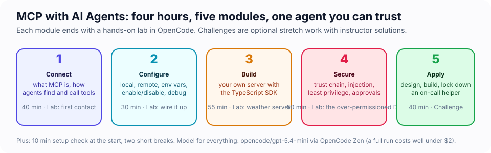
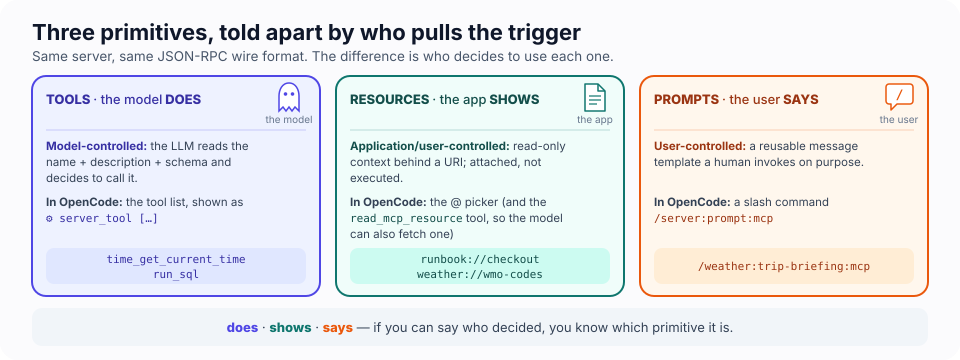

MCP with AI Agents — Student Course Pack
Connect, configure, build, and secure Model Context Protocol (MCP) integrations for AI agents, using OpenCode as the agent and a cheap model so you can experiment freely.
Before the second break you will have watched an AI agent delete customers from a database because a support ticket asked it to, and you will know four separate places to stop it. Everything before that is how you get there; everything after is proof you can.
🎃 Why the pumpkins? It is October, and this course is about giving a ghost hands and then finding out what else is in the house. The decorations are decorations. The labs, the numbers and the incidents are real.

Prefer one page? handout.html is the student handout: every lab's key commands, predictions that keep score, the cheat sheet, and an operator card that fills in as you go. Open it in a browser next to your terminals.
Want the concepts in depth? slides/ is the reference deck: every concept in the course with diagrams and speaker notes (press N), a cheat sheet and a glossary. R turns it into one scrolling page.
#MCP in sixty seconds
A language model on its own can only produce text. To do anything it has to be wrapped in an application that carries out what it asks for. That application is the host; in this course the host is OpenCode. The Model Context Protocol is the standard way for a host to ask an outside program "what can you do?" and then "do it". The outside program is an MCP server. A server can offer three things: tools (actions the model may decide to call), resources (data a person attaches to the conversation) and prompts (templates a person runs on purpose). A server runs either as a child process on your machine or as a service over HTTPS, and the messages are the same either way: JSON, one object at a time.

That is the whole protocol. Everything else in these four hours is about what happens when a model is allowed to pull those levers, who decides which levers exist, and how to find out what it actually did.
What MCP is not, because the name invites confusion: it is not a model, not an agent framework, not an app store and not a security product. It is plumbing, and plumbing has no opinion about what flows through it. By Module 4 that sentence will be the point of the whole course.
#The six moments this course is built around
| Lab | You will watch… | Live in terminal 2 |
|---|---|---|
| 1 · First contact | every JSON-RPC message between OpenCode and a server, timed to the millisecond, while the agent answers you | wiretap-view.mjs |
| 2 · Wire it up | a red server turn green the second you save the fix, and one server cost 1,200 tokens a turn before it did anything | context-tax.mjs --watch |
| 3 · Build | a model you never told about your tool decide to call it, and one deleted sentence change what it does | tool-card.mjs --watch, scoring your tool out of 10 |
| 4 · Secure | the agent say "removed 2 customers" while the database loses 3 rows, and then route around the tool you denied | watch-db.mjs, leak-report.mjs |
| 5 · Apply | a sev4 typo report restart production, and then the same prompt bounce off the agent you built | the status API's own ops board |
| 6 · Go remote (optional) | a freeze declared in one terminal make the deploy tool vanish from an agent in another, mid-session |
the release desk's own board |
Every one of these was captured from a real run with the course model. Your run may differ in the details; when it does, compare with your neighbour. The variance is part of the lesson.
#Who this is for
Software developers, tech leads and security engineers who have completed Orchestration Fundamentals for Agentic Development (or have equivalent hands-on experience with an agentic coding tool), are comfortable in a terminal, and can read TypeScript.
#What you will walk away with
- A working mental model of MCP: hosts, clients, servers, and the three capability types (tools, resources, prompts).
- OpenCode configured against local and remote MCP servers, with the ability to diagnose connection problems in minutes.
- Your own MCP server (TypeScript, MCP SDK v2) wrapping a real external API, discovered and invoked by an agent in natural language.
- A security playbook you can apply on Monday: trust chain, prompt injection, least privilege, approval controls, logging, and organisational guardrails.
- A completed end-to-end "on-call helper" agent that proves you can do all of the above under time pressure.
- (Module 6, optional) A shared Streamable HTTP server with per-person tokens, server-side authorization, progress, cancellation and tools that change at runtime, plus a clear picture of what your host does and does not support.
#Schedule (4 hours)
| Clock | Block | Guide | Minutes |
|---|---|---|---|
| 0:00 | Welcome + setup check | 00 · Setup | 10 |
| 0:10 | Module 1 · Connecting AI agents to external systems with MCP | 01 · Connect | 40 |
| 0:50 | Module 2 · Configuring MCP servers with OpenCode | 02 · Configure | 30 |
| 1:20 | Break | 10 | |
| 1:30 | Module 3 · Building a custom MCP server | 03 · Build | 55 |
| 2:25 | Module 4 · Securing MCP integrations | 04 · Secure | 50 |
| 3:15 | Break | 5 | |
| 3:20 | Module 5 · Applied MCP agent challenge | 05 · Apply | 40 |
| 4:00 | Done | ||
| extension | Module 6 · Advanced MCP: going remote (optional, or a follow-up session) | 06 · Go remote | 50 |
Every module has a hands-on lab, a short Check yourself quiz, and optional 🏆 challenges that get harder as the course goes on: the ones in Modules 4–6 are real engineering problems (pin tool definitions, red-team your own agent, build a human-in-the-loop the model cannot fake). Do them if you are ahead, or after class. Your instructor has worked solutions for every one.
#Folder map
course/
├── README.md ← you are here
├── 00-setup.md … 06-advanced-mcp.md ← the student guides, in order (06 is optional)
├── handout.html ← the one-page student handout
├── slides/index.html ← the reference deck
├── images/ ← diagrams and OpenCode screenshots used by the guides
└── labs/ ← one folder per lab; run `npm install` here ONCE
├── lab1-first-contact/ ← pre-built servers, an MCP wiretap and its live viewer
├── lab2-configure/ ← remote servers, env vars, a debugging dojo, the context-tax board
├── lab3-weather-server/ ← build your own server (starter code) + the tool-card scorer
├── lab4-security/ ← an over-permissioned DB server to break and fix, a live DB watcher
├── lab5-oncall/ ← the applied challenge, with a status API that doubles as an ops board
└── lab6-advanced/ ← a shared Streamable HTTP server with its own board, and a host capability probe
#Get the labs
Everything you run lives in the repository: git clone https://github.com/varoonsahgal/opencode-mcp-course.git, then follow the quick start below from the course/ folder.
#Quick start
cd course/labs
npm install # MCP SDK, tsx, zod, sqlite — shared by every lab
npm run check # verifies Node, OpenCode, your Zen login, network, and warms caches
cd lab1-first-contact
opencode # the TUI; the lab's opencode.json picks the model and the MCP servers
#Model and cost
Every lab's opencode.json sets the model to opencode/gpt-5.4-mini through OpenCode Zen (the built-in opencode provider). It is cheap, fast, and calls tools reliably. A typical tool-calling turn costs about a cent; a full run of all five labs costs well under $2. If you want to go even cheaper, /models and pick gpt-5.4-nano. Please do not switch to frontier models during class.
#How to read the guides
| Marker | Meaning |
|---|---|
| 🎬 Cold open | The situation the module is about, before any theory |
| 🎯 Mission | What you will have done by the end of the lab; tick them off |
| 💡 Insight | The non-obvious thing that makes the rest click |
| 📖 Key concept | A term or rule you will use for the rest of the course, defined once |
| 🔬 Under the hood | The mechanism behind what you just saw, in a few lines |
| 🧪 Exercise | Do this now, in your terminal |
| 🖥️ Split screen | Run a live viewer in a second terminal while the agent works in the first |
| 🔮 Predict | Commit to a guess before you run it. Being wrong is the point |
| 🤯 The reveal | The moment the module is built around. Slow down here |
| 🎲 Fun | A playful detour that still teaches something |
| ✅ Check yourself | Two-minute self-quiz, answers folded underneath |
| 🏆 Challenge | Optional stretch work with an instructor solution |
| ⚠️ Security | A risk you will meet in the wild |
| 🏅 Mission complete | What you can now do that you could not an hour ago |
| 🍬 Treat | A small extra fact: history, a number, a name for the thing you just saw. Skippable, but tasty |
| 👻 Ghost story | A real incident from the wild. Every one of them is documented and none of them needed a zero-day |
| 🎃 Comic relief | A three-panel strip. The joke is also the lesson, so do not skip the caption |
Write your 🔮 predictions down, on paper or in a scratch file. A guess you only made in your head is a guess you will remember making correctly.
Most labs work best with two terminals side by side: OpenCode in the first, a live viewer in the second. Terminal screenshots in the guides were taken from OpenCode 1.18 with the exact lab files you have. If your screen differs a little (a newer version, a different theme), the commands still apply.